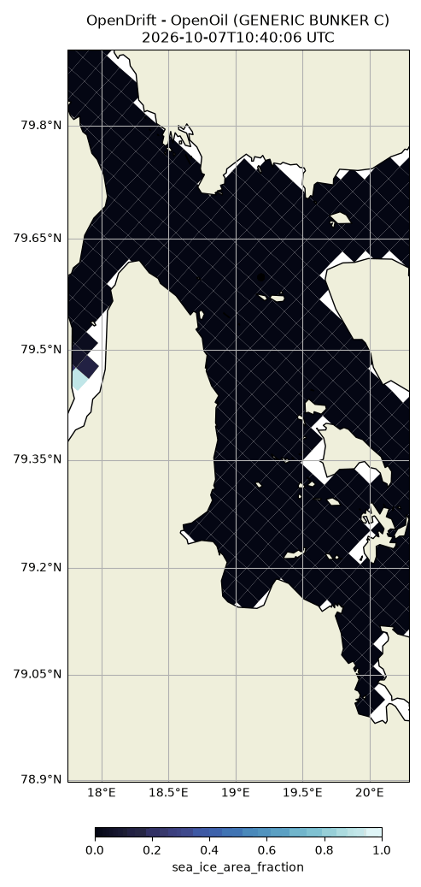
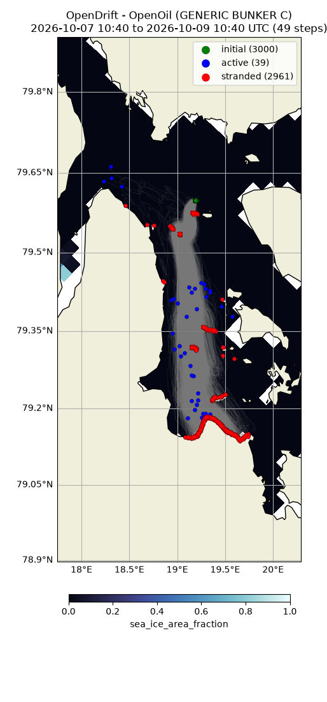

Note
Go to the end to download the full example code.
Oil in ice
17:04:04 INFO opendrift:569: OpenDriftSimulation initialised (version 1.14.11 / v1.14.12-66-g07283eb)
Using live data from Barents 2.5 km ocean model
o.add_readers_from_list(['https://thredds.met.no/thredds/dodsC/fou-hi/barents_eps_zdepth_be'])
Adjusting some configuration
o.set_config('processes:dispersion', False)
o.set_config('processes:evaporation', False)
o.set_config('processes:emulsification', False)
o.set_config('environment:constant:horizontal_diffusivity', 10)
o.set_config('drift:truncate_ocean_model_below_m', 3)
Imaginary oil spill in Hinlopen strait
o.seed_elements(lon=19.1909, lat=79.5986, radius=50,
number=3000, time=datetime.now() - timedelta(days=7))
17:04:04 INFO opendrift.models.openoil.openoil:1720: Oil type not specified, using default: GENERIC BUNKER C
17:04:04 INFO opendrift.models.openoil.adios.dirjs:86: Querying ADIOS database for oil: GENERIC BUNKER C
17:04:04 INFO opendrift.models.openoil.openoil:1731: Using density 988.1 and viscosity 0.021692333877975332 of oiltype GENERIC BUNKER C
17:04:04 INFO opendrift.models.basemodel.environment:203: Adding a global landmask from GSHHG
17:04:10 INFO opendrift.models.basemodel.environment:227: Fallback values will be used for the following variables which have no readers:
17:04:10 INFO opendrift.models.basemodel.environment:230: sea_surface_height: 0.000000
17:04:10 INFO opendrift.models.basemodel.environment:230: upward_sea_water_velocity: 0.000000
17:04:10 INFO opendrift.models.basemodel.environment:230: sea_surface_wave_significant_height: 0.000000
17:04:10 INFO opendrift.models.basemodel.environment:230: sea_surface_wave_stokes_drift_x_velocity: 0.000000
17:04:10 INFO opendrift.models.basemodel.environment:230: sea_surface_wave_stokes_drift_y_velocity: 0.000000
17:04:10 INFO opendrift.models.basemodel.environment:230: sea_surface_wave_period_at_variance_spectral_density_maximum: 0.000000
17:04:10 INFO opendrift.models.basemodel.environment:230: sea_surface_wave_mean_period_from_variance_spectral_density_second_frequency_moment: 0.000000
17:04:10 INFO opendrift.models.basemodel.environment:230: sea_ice_area_fraction: 0.000000
17:04:10 INFO opendrift.models.basemodel.environment:230: sea_ice_x_velocity: 0.000000
17:04:10 INFO opendrift.models.basemodel.environment:230: sea_ice_y_velocity: 0.000000
17:04:10 INFO opendrift.models.basemodel.environment:230: sea_water_temperature: 10.000000
17:04:10 INFO opendrift.models.basemodel.environment:230: sea_water_salinity: 34.000000
17:04:10 INFO opendrift.models.basemodel.environment:230: sea_floor_depth_below_sea_level: 10000.000000
17:04:10 INFO opendrift.models.basemodel.environment:230: ocean_vertical_diffusivity: 0.020000
17:04:10 INFO opendrift.models.basemodel.environment:230: ocean_mixed_layer_thickness: 50.000000
Running model
o.run(duration=timedelta(hours=48), time_step=1800, time_step_output=3600)
17:04:10 INFO opendrift:1911: Skipping environment variable upward_sea_water_velocity because of condition ['drift:vertical_advection', 'is', False]
17:04:10 INFO opendrift:1922: Storing previous values of element property lon because of condition (('general:coastline_action', 'in', ['stranding', 'previous']), 'or', ('general:seafloor_action', 'in', ['previous']))
17:04:10 INFO opendrift:1922: Storing previous values of element property lat because of condition (('general:coastline_action', 'in', ['stranding', 'previous']), 'or', ('general:seafloor_action', 'in', ['previous']))
17:04:10 INFO opendrift:958: Using existing reader for land_binary_mask to move elements to ocean
17:04:10 INFO opendrift:990: All points are in ocean
17:04:10 INFO opendrift.models.openoil.openoil:697: Oil-water surface tension is 0.035935 Nm
17:04:10 INFO opendrift.models.openoil.openoil:710: Max water fraction not available for GENERIC BUNKER C, using default
17:04:10 INFO opendrift:2238: 2026-10-19 17:04:04.575610 - step 1 of 96 - 3000 active elements (0 deactivated)
17:04:10 INFO opendrift.readers:67: Opening file with xr.open_dataset
17:04:11 INFO opendrift.readers.reader_netCDF_CF_generic:340: Detected dimensions: {'x': 'X', 'y': 'Y', 'z': 'depth', 'time': 'time'}
17:04:11 INFO opendrift.readers.basereader:175: Variable x_sea_water_velocity will be rotated from eastward_sea_water_velocity
17:04:11 INFO opendrift.readers.basereader:175: Variable y_sea_water_velocity will be rotated from northward_sea_water_velocity
17:04:14 WARNING opendrift.readers.basereader.variables:685: Invalid values (-0.002961114 to -0.0006503493) found for ocean_vertical_diffusivity, replacing with NaN
17:04:14 WARNING opendrift.readers.basereader.variables:688: (allowed range: [0, 1])
17:04:16 WARNING opendrift.readers.basereader.variables:685: Invalid values (-0.004227803 to -0.0014067775) found for ocean_vertical_diffusivity, replacing with NaN
17:04:16 WARNING opendrift.readers.basereader.variables:688: (allowed range: [0, 1])
17:04:16 WARNING opendrift.readers.interpolation.interpolators:126: Only NaNs input to linearNDFast - returning
17:04:16 WARNING opendrift.readers.interpolation.interpolators:126: Only NaNs input to linearNDFast - returning
17:04:16 INFO opendrift:2238: 2026-10-19 17:34:04.575610 - step 2 of 96 - 3000 active elements (0 deactivated)
17:04:16 WARNING opendrift.readers.interpolation.interpolators:126: Only NaNs input to linearNDFast - returning
17:04:16 WARNING opendrift.readers.interpolation.interpolators:126: Only NaNs input to linearNDFast - returning
17:04:16 INFO opendrift:2238: 2026-10-19 18:04:04.575610 - step 3 of 96 - 3000 active elements (0 deactivated)
17:04:18 WARNING opendrift.readers.basereader.variables:685: Invalid values (-0.0029383807 to -0.00047067754) found for ocean_vertical_diffusivity, replacing with NaN
17:04:18 WARNING opendrift.readers.basereader.variables:688: (allowed range: [0, 1])
17:04:18 WARNING opendrift.readers.interpolation.interpolators:126: Only NaNs input to linearNDFast - returning
17:04:18 WARNING opendrift.readers.interpolation.interpolators:126: Only NaNs input to linearNDFast - returning
17:04:19 INFO opendrift:2238: 2026-10-19 18:34:04.575610 - step 4 of 96 - 3000 active elements (0 deactivated)
17:04:19 WARNING opendrift.readers.interpolation.interpolators:126: Only NaNs input to linearNDFast - returning
17:04:19 WARNING opendrift.readers.interpolation.interpolators:126: Only NaNs input to linearNDFast - returning
17:04:19 INFO opendrift:2238: 2026-10-19 19:04:04.575610 - step 5 of 96 - 3000 active elements (0 deactivated)
17:04:21 WARNING opendrift.readers.basereader.variables:685: Invalid values (-0.00054741866 to -8.84697e-06) found for ocean_vertical_diffusivity, replacing with NaN
17:04:21 WARNING opendrift.readers.basereader.variables:688: (allowed range: [0, 1])
17:04:21 WARNING opendrift.readers.interpolation.interpolators:126: Only NaNs input to linearNDFast - returning
17:04:21 INFO opendrift:2238: 2026-10-19 19:34:04.575610 - step 6 of 96 - 3000 active elements (0 deactivated)
17:04:21 WARNING opendrift.readers.interpolation.interpolators:126: Only NaNs input to linearNDFast - returning
17:04:21 INFO opendrift:2238: 2026-10-19 20:04:04.575610 - step 7 of 96 - 2947 active elements (53 deactivated)
17:04:23 WARNING opendrift.readers.basereader.variables:685: Invalid values (-0.0011198642 to -2.3384746e-05) found for ocean_vertical_diffusivity, replacing with NaN
17:04:23 WARNING opendrift.readers.basereader.variables:688: (allowed range: [0, 1])
17:04:23 INFO opendrift:2238: 2026-10-19 20:34:04.575610 - step 8 of 96 - 2396 active elements (604 deactivated)
17:04:23 INFO opendrift:2238: 2026-10-19 21:04:04.575610 - step 9 of 96 - 1276 active elements (1724 deactivated)
17:04:25 WARNING opendrift.readers.basereader.variables:685: Invalid values (-0.0037683244 to -0.0012490879) found for ocean_vertical_diffusivity, replacing with NaN
17:04:25 WARNING opendrift.readers.basereader.variables:688: (allowed range: [0, 1])
17:04:25 WARNING opendrift.readers.interpolation.interpolators:126: Only NaNs input to linearNDFast - returning
17:04:25 INFO opendrift:2238: 2026-10-19 21:34:04.575610 - step 10 of 96 - 606 active elements (2394 deactivated)
17:04:25 WARNING opendrift.readers.interpolation.interpolators:126: Only NaNs input to linearNDFast - returning
17:04:25 INFO opendrift:2238: 2026-10-19 22:04:04.575610 - step 11 of 96 - 392 active elements (2608 deactivated)
17:04:27 WARNING opendrift.readers.basereader.variables:685: Invalid values (-0.0043314113 to -0.0016422581) found for ocean_vertical_diffusivity, replacing with NaN
17:04:27 WARNING opendrift.readers.basereader.variables:688: (allowed range: [0, 1])
17:04:27 WARNING opendrift.readers.interpolation.interpolators:126: Only NaNs input to linearNDFast - returning
17:04:27 WARNING opendrift.readers.interpolation.interpolators:126: Only NaNs input to linearNDFast - returning
17:04:27 INFO opendrift:2238: 2026-10-19 22:34:04.575610 - step 12 of 96 - 345 active elements (2655 deactivated)
17:04:27 WARNING opendrift.readers.interpolation.interpolators:126: Only NaNs input to linearNDFast - returning
17:04:27 WARNING opendrift.readers.interpolation.interpolators:126: Only NaNs input to linearNDFast - returning
17:04:27 INFO opendrift:2238: 2026-10-19 23:04:04.575610 - step 13 of 96 - 340 active elements (2660 deactivated)
17:04:29 WARNING opendrift.readers.basereader.variables:685: Invalid values (-0.008099883 to -0.0034375577) found for ocean_vertical_diffusivity, replacing with NaN
17:04:29 WARNING opendrift.readers.basereader.variables:688: (allowed range: [0, 1])
17:04:29 WARNING opendrift.readers.interpolation.interpolators:126: Only NaNs input to linearNDFast - returning
17:04:29 WARNING opendrift.readers.interpolation.interpolators:126: Only NaNs input to linearNDFast - returning
17:04:29 INFO opendrift:2238: 2026-10-19 23:34:04.575610 - step 14 of 96 - 339 active elements (2661 deactivated)
17:04:29 WARNING opendrift.readers.interpolation.interpolators:126: Only NaNs input to linearNDFast - returning
17:04:29 WARNING opendrift.readers.interpolation.interpolators:126: Only NaNs input to linearNDFast - returning
17:04:29 INFO opendrift:2238: 2026-10-20 00:04:04.575610 - step 15 of 96 - 337 active elements (2663 deactivated)
17:04:31 WARNING opendrift.readers.basereader.variables:685: Invalid values (-0.0059502665 to -0.0026028296) found for ocean_vertical_diffusivity, replacing with NaN
17:04:31 WARNING opendrift.readers.basereader.variables:688: (allowed range: [0, 1])
17:04:31 WARNING opendrift.readers.interpolation.interpolators:126: Only NaNs input to linearNDFast - returning
17:04:31 WARNING opendrift.readers.interpolation.interpolators:126: Only NaNs input to linearNDFast - returning
17:04:31 INFO opendrift:2238: 2026-10-20 00:34:04.575610 - step 16 of 96 - 337 active elements (2663 deactivated)
17:04:31 WARNING opendrift.readers.interpolation.interpolators:126: Only NaNs input to linearNDFast - returning
17:04:31 WARNING opendrift.readers.interpolation.interpolators:126: Only NaNs input to linearNDFast - returning
17:04:31 INFO opendrift:2238: 2026-10-20 01:04:04.575610 - step 17 of 96 - 337 active elements (2663 deactivated)
17:04:32 WARNING opendrift.readers.basereader.variables:685: Invalid values (-0.006313897 to -0.0027440118) found for ocean_vertical_diffusivity, replacing with NaN
17:04:32 WARNING opendrift.readers.basereader.variables:688: (allowed range: [0, 1])
17:04:32 WARNING opendrift.readers.interpolation.interpolators:126: Only NaNs input to linearNDFast - returning
17:04:32 WARNING opendrift.readers.interpolation.interpolators:126: Only NaNs input to linearNDFast - returning
17:04:33 INFO opendrift:2238: 2026-10-20 01:34:04.575610 - step 18 of 96 - 337 active elements (2663 deactivated)
17:04:33 WARNING opendrift.readers.interpolation.interpolators:126: Only NaNs input to linearNDFast - returning
17:04:33 WARNING opendrift.readers.interpolation.interpolators:126: Only NaNs input to linearNDFast - returning
17:04:33 INFO opendrift:2238: 2026-10-20 02:04:04.575610 - step 19 of 96 - 337 active elements (2663 deactivated)
17:04:34 WARNING opendrift.readers.basereader.variables:685: Invalid values (-0.0071914825 to -0.0031603763) found for ocean_vertical_diffusivity, replacing with NaN
17:04:34 WARNING opendrift.readers.basereader.variables:688: (allowed range: [0, 1])
17:04:34 WARNING opendrift.readers.interpolation.interpolators:126: Only NaNs input to linearNDFast - returning
17:04:34 WARNING opendrift.readers.interpolation.interpolators:126: Only NaNs input to linearNDFast - returning
17:04:34 INFO opendrift:2238: 2026-10-20 02:34:04.575610 - step 20 of 96 - 337 active elements (2663 deactivated)
17:04:34 WARNING opendrift.readers.interpolation.interpolators:126: Only NaNs input to linearNDFast - returning
17:04:34 WARNING opendrift.readers.interpolation.interpolators:126: Only NaNs input to linearNDFast - returning
17:04:34 INFO opendrift:2238: 2026-10-20 03:04:04.575610 - step 21 of 96 - 337 active elements (2663 deactivated)
17:04:36 WARNING opendrift.readers.basereader.variables:685: Invalid values (-0.0082516465 to -0.0032952274) found for ocean_vertical_diffusivity, replacing with NaN
17:04:36 WARNING opendrift.readers.basereader.variables:688: (allowed range: [0, 1])
17:04:36 WARNING opendrift.readers.interpolation.interpolators:126: Only NaNs input to linearNDFast - returning
17:04:36 WARNING opendrift.readers.interpolation.interpolators:126: Only NaNs input to linearNDFast - returning
17:04:36 INFO opendrift:2238: 2026-10-20 03:34:04.575610 - step 22 of 96 - 337 active elements (2663 deactivated)
17:04:36 WARNING opendrift.readers.interpolation.interpolators:126: Only NaNs input to linearNDFast - returning
17:04:36 WARNING opendrift.readers.interpolation.interpolators:126: Only NaNs input to linearNDFast - returning
17:04:36 INFO opendrift:2238: 2026-10-20 04:04:04.575610 - step 23 of 96 - 337 active elements (2663 deactivated)
17:04:38 WARNING opendrift.readers.basereader.variables:685: Invalid values (-0.0103457505 to -0.003229) found for ocean_vertical_diffusivity, replacing with NaN
17:04:38 WARNING opendrift.readers.basereader.variables:688: (allowed range: [0, 1])
17:04:38 WARNING opendrift.readers.interpolation.interpolators:126: Only NaNs input to linearNDFast - returning
17:04:38 WARNING opendrift.readers.interpolation.interpolators:126: Only NaNs input to linearNDFast - returning
17:04:38 INFO opendrift:2238: 2026-10-20 04:34:04.575610 - step 24 of 96 - 337 active elements (2663 deactivated)
17:04:38 WARNING opendrift.readers.interpolation.interpolators:126: Only NaNs input to linearNDFast - returning
17:04:38 WARNING opendrift.readers.interpolation.interpolators:126: Only NaNs input to linearNDFast - returning
17:04:38 INFO opendrift:2238: 2026-10-20 05:04:04.575610 - step 25 of 96 - 337 active elements (2663 deactivated)
17:04:39 WARNING opendrift.readers.basereader.variables:685: Invalid values (-0.009960848 to -0.002989499) found for ocean_vertical_diffusivity, replacing with NaN
17:04:39 WARNING opendrift.readers.basereader.variables:688: (allowed range: [0, 1])
17:04:39 WARNING opendrift.readers.interpolation.interpolators:126: Only NaNs input to linearNDFast - returning
17:04:39 WARNING opendrift.readers.interpolation.interpolators:126: Only NaNs input to linearNDFast - returning
17:04:40 INFO opendrift:2238: 2026-10-20 05:34:04.575610 - step 26 of 96 - 337 active elements (2663 deactivated)
17:04:40 WARNING opendrift.readers.interpolation.interpolators:126: Only NaNs input to linearNDFast - returning
17:04:40 WARNING opendrift.readers.interpolation.interpolators:126: Only NaNs input to linearNDFast - returning
17:04:40 INFO opendrift:2238: 2026-10-20 06:04:04.575610 - step 27 of 96 - 337 active elements (2663 deactivated)
17:04:41 WARNING opendrift.readers.basereader.variables:685: Invalid values (-0.00823497 to -0.0026815569) found for ocean_vertical_diffusivity, replacing with NaN
17:04:41 WARNING opendrift.readers.basereader.variables:688: (allowed range: [0, 1])
17:04:41 WARNING opendrift.readers.interpolation.interpolators:126: Only NaNs input to linearNDFast - returning
17:04:41 WARNING opendrift.readers.interpolation.interpolators:126: Only NaNs input to linearNDFast - returning
17:04:41 INFO opendrift:2238: 2026-10-20 06:34:04.575610 - step 28 of 96 - 337 active elements (2663 deactivated)
17:04:41 WARNING opendrift.readers.interpolation.interpolators:126: Only NaNs input to linearNDFast - returning
17:04:41 WARNING opendrift.readers.interpolation.interpolators:126: Only NaNs input to linearNDFast - returning
17:04:41 INFO opendrift:2238: 2026-10-20 07:04:04.575610 - step 29 of 96 - 337 active elements (2663 deactivated)
17:04:43 WARNING opendrift.readers.basereader.variables:685: Invalid values (-0.005379248 to -0.0020979044) found for ocean_vertical_diffusivity, replacing with NaN
17:04:43 WARNING opendrift.readers.basereader.variables:688: (allowed range: [0, 1])
17:04:43 WARNING opendrift.readers.interpolation.interpolators:126: Only NaNs input to linearNDFast - returning
17:04:43 WARNING opendrift.readers.interpolation.interpolators:126: Only NaNs input to linearNDFast - returning
17:04:43 INFO opendrift:2238: 2026-10-20 07:34:04.575610 - step 30 of 96 - 337 active elements (2663 deactivated)
17:04:43 WARNING opendrift.readers.interpolation.interpolators:126: Only NaNs input to linearNDFast - returning
17:04:43 WARNING opendrift.readers.interpolation.interpolators:126: Only NaNs input to linearNDFast - returning
17:04:43 INFO opendrift:2238: 2026-10-20 08:04:04.575610 - step 31 of 96 - 337 active elements (2663 deactivated)
17:04:45 WARNING opendrift.readers.basereader.variables:685: Invalid values (-0.0036609808 to -0.0013047) found for ocean_vertical_diffusivity, replacing with NaN
17:04:45 WARNING opendrift.readers.basereader.variables:688: (allowed range: [0, 1])
17:04:45 WARNING opendrift.readers.interpolation.interpolators:126: Only NaNs input to linearNDFast - returning
17:04:45 WARNING opendrift.readers.interpolation.interpolators:126: Only NaNs input to linearNDFast - returning
17:04:45 INFO opendrift:2238: 2026-10-20 08:34:04.575610 - step 32 of 96 - 337 active elements (2663 deactivated)
17:04:45 WARNING opendrift.readers.interpolation.interpolators:126: Only NaNs input to linearNDFast - returning
17:04:45 WARNING opendrift.readers.interpolation.interpolators:126: Only NaNs input to linearNDFast - returning
17:04:45 INFO opendrift:2238: 2026-10-20 09:04:04.575610 - step 33 of 96 - 337 active elements (2663 deactivated)
17:04:47 WARNING opendrift.readers.basereader.variables:685: Invalid values (-0.0033472124 to -0.0006139252) found for ocean_vertical_diffusivity, replacing with NaN
17:04:47 WARNING opendrift.readers.basereader.variables:688: (allowed range: [0, 1])
17:04:47 WARNING opendrift.readers.interpolation.interpolators:126: Only NaNs input to linearNDFast - returning
17:04:47 WARNING opendrift.readers.interpolation.interpolators:126: Only NaNs input to linearNDFast - returning
17:04:47 INFO opendrift:2238: 2026-10-20 09:34:04.575610 - step 34 of 96 - 337 active elements (2663 deactivated)
17:04:47 WARNING opendrift.readers.interpolation.interpolators:126: Only NaNs input to linearNDFast - returning
17:04:47 WARNING opendrift.readers.interpolation.interpolators:126: Only NaNs input to linearNDFast - returning
17:04:47 INFO opendrift:2238: 2026-10-20 10:04:04.575610 - step 35 of 96 - 337 active elements (2663 deactivated)
17:04:48 WARNING opendrift.readers.basereader.variables:685: Invalid values (-0.0044576507 to -0.00073095947) found for ocean_vertical_diffusivity, replacing with NaN
17:04:48 WARNING opendrift.readers.basereader.variables:688: (allowed range: [0, 1])
17:04:48 WARNING opendrift.readers.interpolation.interpolators:126: Only NaNs input to linearNDFast - returning
17:04:48 WARNING opendrift.readers.interpolation.interpolators:126: Only NaNs input to linearNDFast - returning
17:04:48 INFO opendrift:2238: 2026-10-20 10:34:04.575610 - step 36 of 96 - 337 active elements (2663 deactivated)
17:04:48 WARNING opendrift.readers.interpolation.interpolators:126: Only NaNs input to linearNDFast - returning
17:04:48 WARNING opendrift.readers.interpolation.interpolators:126: Only NaNs input to linearNDFast - returning
17:04:49 INFO opendrift:2238: 2026-10-20 11:04:04.575610 - step 37 of 96 - 337 active elements (2663 deactivated)
17:04:50 WARNING opendrift.readers.basereader.variables:685: Invalid values (-0.0061663203 to -0.0015164511) found for ocean_vertical_diffusivity, replacing with NaN
17:04:50 WARNING opendrift.readers.basereader.variables:688: (allowed range: [0, 1])
17:04:50 WARNING opendrift.readers.interpolation.interpolators:126: Only NaNs input to linearNDFast - returning
17:04:50 WARNING opendrift.readers.interpolation.interpolators:126: Only NaNs input to linearNDFast - returning
17:04:50 INFO opendrift:2238: 2026-10-20 11:34:04.575610 - step 38 of 96 - 337 active elements (2663 deactivated)
17:04:50 WARNING opendrift.readers.interpolation.interpolators:126: Only NaNs input to linearNDFast - returning
17:04:50 WARNING opendrift.readers.interpolation.interpolators:126: Only NaNs input to linearNDFast - returning
17:04:50 INFO opendrift:2238: 2026-10-20 12:04:04.575610 - step 39 of 96 - 337 active elements (2663 deactivated)
17:04:52 WARNING opendrift.readers.basereader.variables:685: Invalid values (-0.0057770405 to -0.0019203008) found for ocean_vertical_diffusivity, replacing with NaN
17:04:52 WARNING opendrift.readers.basereader.variables:688: (allowed range: [0, 1])
17:04:52 WARNING opendrift.readers.interpolation.interpolators:126: Only NaNs input to linearNDFast - returning
17:04:52 WARNING opendrift.readers.interpolation.interpolators:126: Only NaNs input to linearNDFast - returning
17:04:52 INFO opendrift:2238: 2026-10-20 12:34:04.575610 - step 40 of 96 - 337 active elements (2663 deactivated)
17:04:52 WARNING opendrift.readers.interpolation.interpolators:126: Only NaNs input to linearNDFast - returning
17:04:52 WARNING opendrift.readers.interpolation.interpolators:126: Only NaNs input to linearNDFast - returning
17:04:52 INFO opendrift:2238: 2026-10-20 13:04:04.575610 - step 41 of 96 - 337 active elements (2663 deactivated)
17:04:54 WARNING opendrift.readers.basereader.variables:685: Invalid values (-0.0051659015 to -0.0013372563) found for ocean_vertical_diffusivity, replacing with NaN
17:04:54 WARNING opendrift.readers.basereader.variables:688: (allowed range: [0, 1])
17:04:54 WARNING opendrift.readers.interpolation.interpolators:126: Only NaNs input to linearNDFast - returning
17:04:54 WARNING opendrift.readers.interpolation.interpolators:126: Only NaNs input to linearNDFast - returning
17:04:54 INFO opendrift:2238: 2026-10-20 13:34:04.575610 - step 42 of 96 - 337 active elements (2663 deactivated)
17:04:54 WARNING opendrift.readers.interpolation.interpolators:126: Only NaNs input to linearNDFast - returning
17:04:54 WARNING opendrift.readers.interpolation.interpolators:126: Only NaNs input to linearNDFast - returning
17:04:54 INFO opendrift:2238: 2026-10-20 14:04:04.575610 - step 43 of 96 - 337 active elements (2663 deactivated)
17:04:56 WARNING opendrift.readers.basereader.variables:685: Invalid values (-0.004461889 to -0.0013764916) found for ocean_vertical_diffusivity, replacing with NaN
17:04:56 WARNING opendrift.readers.basereader.variables:688: (allowed range: [0, 1])
17:04:56 WARNING opendrift.readers.interpolation.interpolators:126: Only NaNs input to linearNDFast - returning
17:04:56 WARNING opendrift.readers.interpolation.interpolators:126: Only NaNs input to linearNDFast - returning
17:04:56 INFO opendrift:2238: 2026-10-20 14:34:04.575610 - step 44 of 96 - 337 active elements (2663 deactivated)
17:04:56 WARNING opendrift.readers.interpolation.interpolators:126: Only NaNs input to linearNDFast - returning
17:04:56 WARNING opendrift.readers.interpolation.interpolators:126: Only NaNs input to linearNDFast - returning
17:04:56 INFO opendrift:2238: 2026-10-20 15:04:04.575610 - step 45 of 96 - 337 active elements (2663 deactivated)
17:04:57 WARNING opendrift.readers.basereader.variables:685: Invalid values (-0.005006114 to -0.0021939543) found for ocean_vertical_diffusivity, replacing with NaN
17:04:57 WARNING opendrift.readers.basereader.variables:688: (allowed range: [0, 1])
17:04:57 WARNING opendrift.readers.interpolation.interpolators:126: Only NaNs input to linearNDFast - returning
17:04:57 WARNING opendrift.readers.interpolation.interpolators:126: Only NaNs input to linearNDFast - returning
17:04:58 INFO opendrift:2238: 2026-10-20 15:34:04.575610 - step 46 of 96 - 337 active elements (2663 deactivated)
17:04:58 WARNING opendrift.readers.interpolation.interpolators:126: Only NaNs input to linearNDFast - returning
17:04:58 WARNING opendrift.readers.interpolation.interpolators:126: Only NaNs input to linearNDFast - returning
17:04:58 INFO opendrift:2238: 2026-10-20 16:04:04.575610 - step 47 of 96 - 337 active elements (2663 deactivated)
17:04:59 WARNING opendrift.readers.basereader.variables:685: Invalid values (-0.0052011153 to -0.0018951086) found for ocean_vertical_diffusivity, replacing with NaN
17:04:59 WARNING opendrift.readers.basereader.variables:688: (allowed range: [0, 1])
17:04:59 WARNING opendrift.readers.interpolation.interpolators:126: Only NaNs input to linearNDFast - returning
17:04:59 WARNING opendrift.readers.interpolation.interpolators:126: Only NaNs input to linearNDFast - returning
17:04:59 INFO opendrift:2238: 2026-10-20 16:34:04.575610 - step 48 of 96 - 337 active elements (2663 deactivated)
17:04:59 WARNING opendrift.readers.interpolation.interpolators:126: Only NaNs input to linearNDFast - returning
17:04:59 WARNING opendrift.readers.interpolation.interpolators:126: Only NaNs input to linearNDFast - returning
17:05:00 INFO opendrift:2238: 2026-10-20 17:04:04.575610 - step 49 of 96 - 337 active elements (2663 deactivated)
17:05:01 WARNING opendrift.readers.basereader.variables:685: Invalid values (-0.0043505253 to -0.0012584003) found for ocean_vertical_diffusivity, replacing with NaN
17:05:01 WARNING opendrift.readers.basereader.variables:688: (allowed range: [0, 1])
17:05:01 WARNING opendrift.readers.interpolation.interpolators:126: Only NaNs input to linearNDFast - returning
17:05:01 WARNING opendrift.readers.interpolation.interpolators:126: Only NaNs input to linearNDFast - returning
17:05:01 INFO opendrift:2238: 2026-10-20 17:34:04.575610 - step 50 of 96 - 337 active elements (2663 deactivated)
17:05:01 WARNING opendrift.readers.interpolation.interpolators:126: Only NaNs input to linearNDFast - returning
17:05:01 WARNING opendrift.readers.interpolation.interpolators:126: Only NaNs input to linearNDFast - returning
17:05:01 INFO opendrift:2238: 2026-10-20 18:04:04.575610 - step 51 of 96 - 337 active elements (2663 deactivated)
17:05:03 WARNING opendrift.readers.basereader.variables:685: Invalid values (-0.0034724467 to -0.0010944925) found for ocean_vertical_diffusivity, replacing with NaN
17:05:03 WARNING opendrift.readers.basereader.variables:688: (allowed range: [0, 1])
17:05:03 WARNING opendrift.readers.interpolation.interpolators:126: Only NaNs input to linearNDFast - returning
17:05:03 WARNING opendrift.readers.interpolation.interpolators:126: Only NaNs input to linearNDFast - returning
17:05:03 INFO opendrift:2238: 2026-10-20 18:34:04.575610 - step 52 of 96 - 337 active elements (2663 deactivated)
17:05:03 WARNING opendrift.readers.interpolation.interpolators:126: Only NaNs input to linearNDFast - returning
17:05:03 WARNING opendrift.readers.interpolation.interpolators:126: Only NaNs input to linearNDFast - returning
17:05:03 INFO opendrift:2238: 2026-10-20 19:04:04.575610 - step 53 of 96 - 337 active elements (2663 deactivated)
17:05:05 WARNING opendrift.readers.basereader.variables:685: Invalid values (-0.0031234878 to -0.00071187987) found for ocean_vertical_diffusivity, replacing with NaN
17:05:05 WARNING opendrift.readers.basereader.variables:688: (allowed range: [0, 1])
17:05:05 WARNING opendrift.readers.interpolation.interpolators:126: Only NaNs input to linearNDFast - returning
17:05:05 WARNING opendrift.readers.interpolation.interpolators:126: Only NaNs input to linearNDFast - returning
17:05:05 INFO opendrift:2238: 2026-10-20 19:34:04.575610 - step 54 of 96 - 337 active elements (2663 deactivated)
17:05:05 WARNING opendrift.readers.interpolation.interpolators:126: Only NaNs input to linearNDFast - returning
17:05:05 WARNING opendrift.readers.interpolation.interpolators:126: Only NaNs input to linearNDFast - returning
17:05:05 INFO opendrift:2238: 2026-10-20 20:04:04.575610 - step 55 of 96 - 337 active elements (2663 deactivated)
17:05:07 WARNING opendrift.readers.basereader.variables:685: Invalid values (-0.0027116544 to -0.00060711976) found for ocean_vertical_diffusivity, replacing with NaN
17:05:07 WARNING opendrift.readers.basereader.variables:688: (allowed range: [0, 1])
17:05:07 WARNING opendrift.readers.interpolation.interpolators:126: Only NaNs input to linearNDFast - returning
17:05:07 WARNING opendrift.readers.interpolation.interpolators:126: Only NaNs input to linearNDFast - returning
17:05:07 INFO opendrift:2238: 2026-10-20 20:34:04.575610 - step 56 of 96 - 337 active elements (2663 deactivated)
17:05:07 WARNING opendrift.readers.interpolation.interpolators:126: Only NaNs input to linearNDFast - returning
17:05:07 WARNING opendrift.readers.interpolation.interpolators:126: Only NaNs input to linearNDFast - returning
17:05:07 INFO opendrift:2238: 2026-10-20 21:04:04.575610 - step 57 of 96 - 337 active elements (2663 deactivated)
17:05:09 WARNING opendrift.readers.basereader.variables:685: Invalid values (-0.003001094 to -0.0005608169) found for ocean_vertical_diffusivity, replacing with NaN
17:05:09 WARNING opendrift.readers.basereader.variables:688: (allowed range: [0, 1])
17:05:09 WARNING opendrift.readers.interpolation.interpolators:126: Only NaNs input to linearNDFast - returning
17:05:09 WARNING opendrift.readers.interpolation.interpolators:126: Only NaNs input to linearNDFast - returning
17:05:09 INFO opendrift:2238: 2026-10-20 21:34:04.575610 - step 58 of 96 - 336 active elements (2664 deactivated)
17:05:09 WARNING opendrift.readers.interpolation.interpolators:126: Only NaNs input to linearNDFast - returning
17:05:09 WARNING opendrift.readers.interpolation.interpolators:126: Only NaNs input to linearNDFast - returning
17:05:09 INFO opendrift:2238: 2026-10-20 22:04:04.575610 - step 59 of 96 - 336 active elements (2664 deactivated)
17:05:11 WARNING opendrift.readers.basereader.variables:685: Invalid values (-0.004194457 to -0.0007472871) found for ocean_vertical_diffusivity, replacing with NaN
17:05:11 WARNING opendrift.readers.basereader.variables:688: (allowed range: [0, 1])
17:05:11 WARNING opendrift.readers.interpolation.interpolators:126: Only NaNs input to linearNDFast - returning
17:05:11 WARNING opendrift.readers.interpolation.interpolators:126: Only NaNs input to linearNDFast - returning
17:05:11 INFO opendrift:2238: 2026-10-20 22:34:04.575610 - step 60 of 96 - 335 active elements (2665 deactivated)
17:05:11 WARNING opendrift.readers.interpolation.interpolators:126: Only NaNs input to linearNDFast - returning
17:05:11 WARNING opendrift.readers.interpolation.interpolators:126: Only NaNs input to linearNDFast - returning
17:05:11 INFO opendrift:2238: 2026-10-20 23:04:04.575610 - step 61 of 96 - 335 active elements (2665 deactivated)
17:05:14 WARNING opendrift.readers.basereader.variables:685: Invalid values (-0.0047714594 to -0.00047167685) found for ocean_vertical_diffusivity, replacing with NaN
17:05:14 WARNING opendrift.readers.basereader.variables:688: (allowed range: [0, 1])
17:05:14 WARNING opendrift.readers.interpolation.interpolators:126: Only NaNs input to linearNDFast - returning
17:05:14 WARNING opendrift.readers.interpolation.interpolators:126: Only NaNs input to linearNDFast - returning
17:05:14 INFO opendrift:2238: 2026-10-20 23:34:04.575610 - step 62 of 96 - 334 active elements (2666 deactivated)
17:05:14 WARNING opendrift.readers.interpolation.interpolators:126: Only NaNs input to linearNDFast - returning
17:05:14 WARNING opendrift.readers.interpolation.interpolators:126: Only NaNs input to linearNDFast - returning
17:05:14 INFO opendrift:2238: 2026-10-21 00:04:04.575610 - step 63 of 96 - 334 active elements (2666 deactivated)
17:05:16 WARNING opendrift.readers.basereader.variables:685: Invalid values (-0.0038085328 to -0.0003753794) found for ocean_vertical_diffusivity, replacing with NaN
17:05:16 WARNING opendrift.readers.basereader.variables:688: (allowed range: [0, 1])
17:05:16 WARNING opendrift.readers.interpolation.interpolators:126: Only NaNs input to linearNDFast - returning
17:05:16 WARNING opendrift.readers.interpolation.interpolators:126: Only NaNs input to linearNDFast - returning
17:05:16 INFO opendrift:2238: 2026-10-21 00:34:04.575610 - step 64 of 96 - 334 active elements (2666 deactivated)
17:05:16 WARNING opendrift.readers.interpolation.interpolators:126: Only NaNs input to linearNDFast - returning
17:05:16 WARNING opendrift.readers.interpolation.interpolators:126: Only NaNs input to linearNDFast - returning
17:05:16 INFO opendrift:2238: 2026-10-21 01:04:04.575610 - step 65 of 96 - 334 active elements (2666 deactivated)
17:05:18 WARNING opendrift.readers.basereader.variables:685: Invalid values (-0.005027892 to -0.0008168602) found for ocean_vertical_diffusivity, replacing with NaN
17:05:18 WARNING opendrift.readers.basereader.variables:688: (allowed range: [0, 1])
17:05:18 WARNING opendrift.readers.interpolation.interpolators:126: Only NaNs input to linearNDFast - returning
17:05:18 WARNING opendrift.readers.interpolation.interpolators:126: Only NaNs input to linearNDFast - returning
17:05:18 INFO opendrift:2238: 2026-10-21 01:34:04.575610 - step 66 of 96 - 334 active elements (2666 deactivated)
17:05:18 WARNING opendrift.readers.interpolation.interpolators:126: Only NaNs input to linearNDFast - returning
17:05:18 WARNING opendrift.readers.interpolation.interpolators:126: Only NaNs input to linearNDFast - returning
17:05:18 INFO opendrift:2238: 2026-10-21 02:04:04.575610 - step 67 of 96 - 334 active elements (2666 deactivated)
17:05:19 WARNING opendrift.readers.basereader.variables:685: Invalid values (-0.010353543 to -0.0018756444) found for ocean_vertical_diffusivity, replacing with NaN
17:05:19 WARNING opendrift.readers.basereader.variables:688: (allowed range: [0, 1])
17:05:19 WARNING opendrift.readers.interpolation.interpolators:126: Only NaNs input to linearNDFast - returning
17:05:19 WARNING opendrift.readers.interpolation.interpolators:126: Only NaNs input to linearNDFast - returning
17:05:20 INFO opendrift:2238: 2026-10-21 02:34:04.575610 - step 68 of 96 - 334 active elements (2666 deactivated)
17:05:20 WARNING opendrift.readers.interpolation.interpolators:126: Only NaNs input to linearNDFast - returning
17:05:20 WARNING opendrift.readers.interpolation.interpolators:126: Only NaNs input to linearNDFast - returning
17:05:20 INFO opendrift:2238: 2026-10-21 03:04:04.575610 - step 69 of 96 - 334 active elements (2666 deactivated)
17:05:21 WARNING opendrift.readers.basereader.variables:685: Invalid values (-0.011507583 to -0.0019191233) found for ocean_vertical_diffusivity, replacing with NaN
17:05:21 WARNING opendrift.readers.basereader.variables:688: (allowed range: [0, 1])
17:05:21 WARNING opendrift.readers.interpolation.interpolators:126: Only NaNs input to linearNDFast - returning
17:05:21 WARNING opendrift.readers.interpolation.interpolators:126: Only NaNs input to linearNDFast - returning
17:05:21 INFO opendrift:2238: 2026-10-21 03:34:04.575610 - step 70 of 96 - 334 active elements (2666 deactivated)
17:05:21 WARNING opendrift.readers.interpolation.interpolators:126: Only NaNs input to linearNDFast - returning
17:05:21 WARNING opendrift.readers.interpolation.interpolators:126: Only NaNs input to linearNDFast - returning
17:05:22 INFO opendrift:2238: 2026-10-21 04:04:04.575610 - step 71 of 96 - 334 active elements (2666 deactivated)
17:05:23 WARNING opendrift.readers.basereader.variables:685: Invalid values (-0.0092412885 to -0.0011915877) found for ocean_vertical_diffusivity, replacing with NaN
17:05:23 WARNING opendrift.readers.basereader.variables:688: (allowed range: [0, 1])
17:05:23 WARNING opendrift.readers.interpolation.interpolators:126: Only NaNs input to linearNDFast - returning
17:05:23 WARNING opendrift.readers.interpolation.interpolators:126: Only NaNs input to linearNDFast - returning
17:05:23 INFO opendrift:2238: 2026-10-21 04:34:04.575610 - step 72 of 96 - 334 active elements (2666 deactivated)
17:05:23 WARNING opendrift.readers.interpolation.interpolators:126: Only NaNs input to linearNDFast - returning
17:05:23 WARNING opendrift.readers.interpolation.interpolators:126: Only NaNs input to linearNDFast - returning
17:05:23 INFO opendrift:2238: 2026-10-21 05:04:04.575610 - step 73 of 96 - 333 active elements (2667 deactivated)
17:05:25 WARNING opendrift.readers.basereader.variables:685: Invalid values (-0.008463149 to -0.00094814814) found for ocean_vertical_diffusivity, replacing with NaN
17:05:25 WARNING opendrift.readers.basereader.variables:688: (allowed range: [0, 1])
17:05:25 WARNING opendrift.readers.interpolation.interpolators:126: Only NaNs input to linearNDFast - returning
17:05:25 WARNING opendrift.readers.interpolation.interpolators:126: Only NaNs input to linearNDFast - returning
17:05:25 INFO opendrift:2238: 2026-10-21 05:34:04.575610 - step 74 of 96 - 331 active elements (2669 deactivated)
17:05:25 WARNING opendrift.readers.interpolation.interpolators:126: Only NaNs input to linearNDFast - returning
17:05:25 WARNING opendrift.readers.interpolation.interpolators:126: Only NaNs input to linearNDFast - returning
17:05:25 INFO opendrift:2238: 2026-10-21 06:04:04.575610 - step 75 of 96 - 331 active elements (2669 deactivated)
17:05:27 WARNING opendrift.readers.basereader.variables:685: Invalid values (-0.007979725 to -0.00097519805) found for ocean_vertical_diffusivity, replacing with NaN
17:05:27 WARNING opendrift.readers.basereader.variables:688: (allowed range: [0, 1])
17:05:27 WARNING opendrift.readers.interpolation.interpolators:126: Only NaNs input to linearNDFast - returning
17:05:27 WARNING opendrift.readers.interpolation.interpolators:126: Only NaNs input to linearNDFast - returning
17:05:27 INFO opendrift:2238: 2026-10-21 06:34:04.575610 - step 76 of 96 - 329 active elements (2671 deactivated)
17:05:27 WARNING opendrift.readers.interpolation.interpolators:126: Only NaNs input to linearNDFast - returning
17:05:27 WARNING opendrift.readers.interpolation.interpolators:126: Only NaNs input to linearNDFast - returning
17:05:27 INFO opendrift:2238: 2026-10-21 07:04:04.575610 - step 77 of 96 - 327 active elements (2673 deactivated)
17:05:29 WARNING opendrift.readers.basereader.variables:685: Invalid values (-0.009111846 to -0.0009066815) found for ocean_vertical_diffusivity, replacing with NaN
17:05:29 WARNING opendrift.readers.basereader.variables:688: (allowed range: [0, 1])
17:05:29 WARNING opendrift.readers.interpolation.interpolators:126: Only NaNs input to linearNDFast - returning
17:05:29 WARNING opendrift.readers.interpolation.interpolators:126: Only NaNs input to linearNDFast - returning
17:05:29 INFO opendrift:2238: 2026-10-21 07:34:04.575610 - step 78 of 96 - 327 active elements (2673 deactivated)
17:05:29 WARNING opendrift.readers.interpolation.interpolators:126: Only NaNs input to linearNDFast - returning
17:05:29 WARNING opendrift.readers.interpolation.interpolators:126: Only NaNs input to linearNDFast - returning
17:05:29 INFO opendrift:2238: 2026-10-21 08:04:04.575610 - step 79 of 96 - 327 active elements (2673 deactivated)
17:05:31 WARNING opendrift.readers.basereader.variables:685: Invalid values (-0.009902922 to -0.0010411416) found for ocean_vertical_diffusivity, replacing with NaN
17:05:31 WARNING opendrift.readers.basereader.variables:688: (allowed range: [0, 1])
17:05:31 WARNING opendrift.readers.interpolation.interpolators:126: Only NaNs input to linearNDFast - returning
17:05:31 WARNING opendrift.readers.interpolation.interpolators:126: Only NaNs input to linearNDFast - returning
17:05:31 INFO opendrift:2238: 2026-10-21 08:34:04.575610 - step 80 of 96 - 327 active elements (2673 deactivated)
17:05:31 WARNING opendrift.readers.interpolation.interpolators:126: Only NaNs input to linearNDFast - returning
17:05:31 WARNING opendrift.readers.interpolation.interpolators:126: Only NaNs input to linearNDFast - returning
17:05:31 INFO opendrift:2238: 2026-10-21 09:04:04.575610 - step 81 of 96 - 327 active elements (2673 deactivated)
17:05:33 WARNING opendrift.readers.basereader.variables:685: Invalid values (-0.0082590245 to -0.0005827769) found for ocean_vertical_diffusivity, replacing with NaN
17:05:33 WARNING opendrift.readers.basereader.variables:688: (allowed range: [0, 1])
17:05:33 WARNING opendrift.readers.interpolation.interpolators:126: Only NaNs input to linearNDFast - returning
17:05:33 WARNING opendrift.readers.interpolation.interpolators:126: Only NaNs input to linearNDFast - returning
17:05:33 INFO opendrift:2238: 2026-10-21 09:34:04.575610 - step 82 of 96 - 326 active elements (2674 deactivated)
17:05:33 WARNING opendrift.readers.interpolation.interpolators:126: Only NaNs input to linearNDFast - returning
17:05:33 WARNING opendrift.readers.interpolation.interpolators:126: Only NaNs input to linearNDFast - returning
17:05:33 INFO opendrift:2238: 2026-10-21 10:04:04.575610 - step 83 of 96 - 323 active elements (2677 deactivated)
17:05:35 WARNING opendrift.readers.basereader.variables:685: Invalid values (-0.008058453 to -0.0003079299) found for ocean_vertical_diffusivity, replacing with NaN
17:05:35 WARNING opendrift.readers.basereader.variables:688: (allowed range: [0, 1])
17:05:35 WARNING opendrift.readers.interpolation.interpolators:126: Only NaNs input to linearNDFast - returning
17:05:35 WARNING opendrift.readers.interpolation.interpolators:126: Only NaNs input to linearNDFast - returning
17:05:35 INFO opendrift:2238: 2026-10-21 10:34:04.575610 - step 84 of 96 - 322 active elements (2678 deactivated)
17:05:35 WARNING opendrift.readers.interpolation.interpolators:126: Only NaNs input to linearNDFast - returning
17:05:35 WARNING opendrift.readers.interpolation.interpolators:126: Only NaNs input to linearNDFast - returning
17:05:35 INFO opendrift:2238: 2026-10-21 11:04:04.575610 - step 85 of 96 - 321 active elements (2679 deactivated)
17:05:37 WARNING opendrift.readers.basereader.variables:685: Invalid values (-0.009819754 to -0.000588117) found for ocean_vertical_diffusivity, replacing with NaN
17:05:37 WARNING opendrift.readers.basereader.variables:688: (allowed range: [0, 1])
17:05:37 WARNING opendrift.readers.interpolation.interpolators:126: Only NaNs input to linearNDFast - returning
17:05:37 WARNING opendrift.readers.interpolation.interpolators:126: Only NaNs input to linearNDFast - returning
17:05:37 INFO opendrift:2238: 2026-10-21 11:34:04.575610 - step 86 of 96 - 320 active elements (2680 deactivated)
17:05:37 WARNING opendrift.readers.interpolation.interpolators:126: Only NaNs input to linearNDFast - returning
17:05:37 WARNING opendrift.readers.interpolation.interpolators:126: Only NaNs input to linearNDFast - returning
17:05:37 INFO opendrift:2238: 2026-10-21 12:04:04.575610 - step 87 of 96 - 319 active elements (2681 deactivated)
17:05:39 WARNING opendrift.readers.basereader.variables:685: Invalid values (-0.013982306 to -0.0005767809) found for ocean_vertical_diffusivity, replacing with NaN
17:05:39 WARNING opendrift.readers.basereader.variables:688: (allowed range: [0, 1])
17:05:39 WARNING opendrift.readers.interpolation.interpolators:126: Only NaNs input to linearNDFast - returning
17:05:39 WARNING opendrift.readers.interpolation.interpolators:126: Only NaNs input to linearNDFast - returning
17:05:39 INFO opendrift:2238: 2026-10-21 12:34:04.575610 - step 88 of 96 - 318 active elements (2682 deactivated)
17:05:39 WARNING opendrift.readers.interpolation.interpolators:126: Only NaNs input to linearNDFast - returning
17:05:39 WARNING opendrift.readers.interpolation.interpolators:126: Only NaNs input to linearNDFast - returning
17:05:39 INFO opendrift:2238: 2026-10-21 13:04:04.575610 - step 89 of 96 - 317 active elements (2683 deactivated)
17:05:41 WARNING opendrift.readers.basereader.variables:685: Invalid values (-0.015828809 to -0.0004581337) found for ocean_vertical_diffusivity, replacing with NaN
17:05:41 WARNING opendrift.readers.basereader.variables:688: (allowed range: [0, 1])
17:05:41 WARNING opendrift.readers.interpolation.interpolators:126: Only NaNs input to linearNDFast - returning
17:05:41 WARNING opendrift.readers.interpolation.interpolators:126: Only NaNs input to linearNDFast - returning
17:05:41 INFO opendrift:2238: 2026-10-21 13:34:04.575610 - step 90 of 96 - 316 active elements (2684 deactivated)
17:05:41 WARNING opendrift.readers.interpolation.interpolators:126: Only NaNs input to linearNDFast - returning
17:05:41 WARNING opendrift.readers.interpolation.interpolators:126: Only NaNs input to linearNDFast - returning
17:05:41 INFO opendrift:2238: 2026-10-21 14:04:04.575610 - step 91 of 96 - 312 active elements (2688 deactivated)
17:05:43 WARNING opendrift.readers.basereader.variables:685: Invalid values (-0.014364104 to -0.0008851378) found for ocean_vertical_diffusivity, replacing with NaN
17:05:43 WARNING opendrift.readers.basereader.variables:688: (allowed range: [0, 1])
17:05:43 WARNING opendrift.readers.interpolation.interpolators:126: Only NaNs input to linearNDFast - returning
17:05:43 WARNING opendrift.readers.interpolation.interpolators:126: Only NaNs input to linearNDFast - returning
17:05:43 INFO opendrift:2238: 2026-10-21 14:34:04.575610 - step 92 of 96 - 308 active elements (2692 deactivated)
17:05:43 WARNING opendrift.readers.interpolation.interpolators:126: Only NaNs input to linearNDFast - returning
17:05:43 WARNING opendrift.readers.interpolation.interpolators:126: Only NaNs input to linearNDFast - returning
17:05:43 INFO opendrift:2238: 2026-10-21 15:04:04.575610 - step 93 of 96 - 306 active elements (2694 deactivated)
17:05:45 WARNING opendrift.readers.basereader.variables:685: Invalid values (-0.014836135 to -0.0009065476) found for ocean_vertical_diffusivity, replacing with NaN
17:05:45 WARNING opendrift.readers.basereader.variables:688: (allowed range: [0, 1])
17:05:45 WARNING opendrift.readers.interpolation.interpolators:126: Only NaNs input to linearNDFast - returning
17:05:45 WARNING opendrift.readers.interpolation.interpolators:126: Only NaNs input to linearNDFast - returning
17:05:45 INFO opendrift:2238: 2026-10-21 15:34:04.575610 - step 94 of 96 - 304 active elements (2696 deactivated)
17:05:45 WARNING opendrift.readers.interpolation.interpolators:126: Only NaNs input to linearNDFast - returning
17:05:45 WARNING opendrift.readers.interpolation.interpolators:126: Only NaNs input to linearNDFast - returning
17:05:45 INFO opendrift:2238: 2026-10-21 16:04:04.575610 - step 95 of 96 - 303 active elements (2697 deactivated)
17:05:47 WARNING opendrift.readers.basereader.variables:685: Invalid values (-0.017446773 to -0.0012896451) found for ocean_vertical_diffusivity, replacing with NaN
17:05:47 WARNING opendrift.readers.basereader.variables:688: (allowed range: [0, 1])
17:05:47 WARNING opendrift.readers.interpolation.interpolators:126: Only NaNs input to linearNDFast - returning
17:05:47 WARNING opendrift.readers.interpolation.interpolators:126: Only NaNs input to linearNDFast - returning
17:05:47 INFO opendrift:2238: 2026-10-21 16:34:04.575610 - step 96 of 96 - 300 active elements (2700 deactivated)
17:05:47 WARNING opendrift.readers.interpolation.interpolators:126: Only NaNs input to linearNDFast - returning
17:05:47 WARNING opendrift.readers.interpolation.interpolators:126: Only NaNs input to linearNDFast - returning
Print and plot results
print(o)
o.animation(background='sea_ice_area_fraction', cmap=cmocean.cm.ice,
vmin=0, vmax=1, bgalpha=1, fast=False)
===========================
--------------------
Reader performance:
--------------------
constant_reader
0:00:00.0 total
0:00:00.0 preparing
0:00:00.0 reading
0:00:00.0 masking
--------------------
global_landmask
0:00:00.0 total
0:00:00.0 preparing
0:00:00.0 reading
0:00:00.0 masking
--------------------
https://thredds.met.no/thredds/dodsC/fou-hi/barents_eps_zdepth_be
0:01:28.3 total
0:00:00.0 preparing
0:01:28.0 reading
0:00:00.4 interpolation
0:00:00.0 interpolation_time
0:00:00.3 rotating vectors
0:00:00.0 masking
--------------------
Performance:
1:42.9 total time
5.6 configuration
0.1 preparing main loop
0.0 moving elements to ocean
1:37.1 main loop
3.1 updating elements
0.0 oil weathering
0.0 updating viscosities
0.0 updating densities
2.9 vertical mixing
0.0 cleaning up
--------------------
===========================
Model: OpenOil (OpenDrift version 1.14.11)
299 active Oil particles (2701 deactivated, 0 scheduled)
-------------------
Environment variables:
-----
horizontal_diffusivity
1) constant_reader
-----
land_binary_mask
1) global_landmask
-----
ocean_vertical_diffusivity
sea_floor_depth_below_sea_level
sea_ice_area_fraction
sea_ice_x_velocity
sea_ice_y_velocity
sea_surface_height
sea_water_salinity
sea_water_temperature
x_sea_water_velocity
x_wind
y_sea_water_velocity
y_wind
1) https://thredds.met.no/thredds/dodsC/fou-hi/barents_eps_zdepth_be
-----
Readers not added for the following variables:
ocean_mixed_layer_thickness
sea_surface_wave_mean_period_from_variance_spectral_density_second_frequency_moment
sea_surface_wave_period_at_variance_spectral_density_maximum
sea_surface_wave_significant_height
sea_surface_wave_stokes_drift_x_velocity
sea_surface_wave_stokes_drift_y_velocity
Discarded readers:
Time:
Start: 2026-10-19 17:04:04.575610 UTC
Present: 2026-10-21 17:04:04.575610 UTC
Calculation steps: 96 * 0:30:00 - total time: 2 days, 0:00:00
Output steps: 49 * 1:00:00
===========================
17:05:57 INFO opendrift:4889: Saving animation to /root/project/docs/source/gallery/animations/example_oil_ice_0.gif...
17:06:17 INFO opendrift:3297: Time to make animation: 0:00:29.750199

o.plot(background='sea_ice_area_fraction', cmap=cmocean.cm.ice,
vmin=0, vmax=1, bgalpha=1, fast=False)

(<GeoAxes: title={'center': 'OpenDrift - OpenOil (GENERIC BUNKER C)\n2026-10-19 17:04 to 2026-10-21 17:04 UTC (49 steps)'}>, <Figure size 583.702x1100 with 2 Axes>)
Total running time of the script: (2 minutes 25.847 seconds)